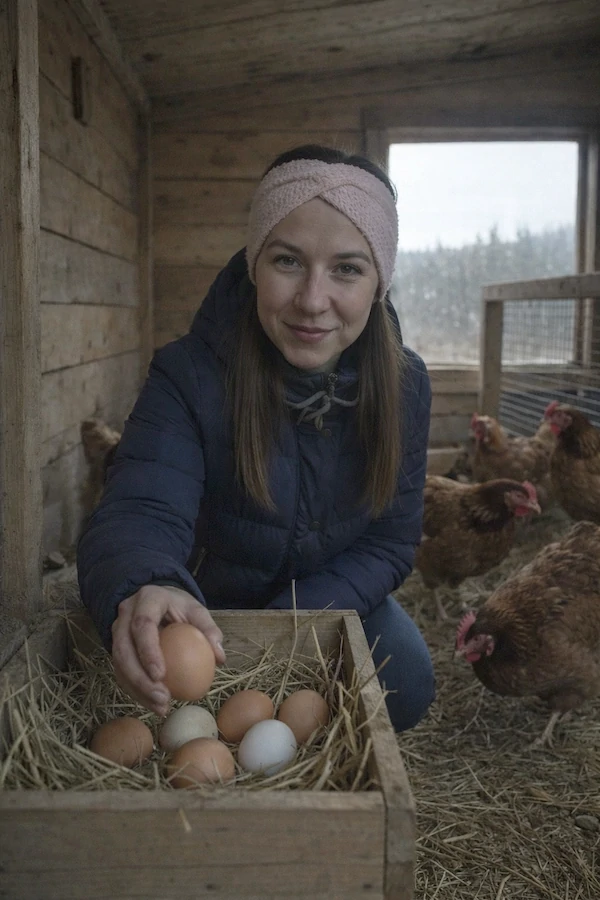

Hlídání zvířat u vás doma – Mělník a okolí
Psi, kočky, hlodavci, plazi i drůbež • První seznámení zdarma
Jedete na dovolenou nebo do práce a potřebujete, aby se o vašeho mazlíčka někdo spolehlivě postaral? Pohlídám ho přímo u vás doma, v prostředí které zná. Žádný stres z cizího místa, žádné převážení – jen klidná péče podle vašich instrukcí.
Působím na Mělníku a v blízkém okolí (Velký Borek, Malý Újezd, Liblice, Hořín, Kly). Do vzdálenějších obcí (nad 5 km) dojíždím za příplatek 12 Kč/km. Jsem pojištěna pro případ škody.

Jaká zvířata hlídám
Psi
Venčení, krmení, společnost. Od štěňat po seniory.
Kočky
Krmení, úklid toalety, hraní, mazlení.
Drobná domácí zvířata
Křečci, morčata, králíci, osmáci degu.
Plazi a exotická zvířata
Agamy, hadi, chameleoni, sklípkani. Mám s nimi praktické zkušenosti a studovala jsem obor Speciální chovy na ČZU.
Drůbež
Slepice, kachny a další. Postarám se o krmení a sběr vajec.
Jak to probíhá
Ozvete se mi
Napište nebo zavolejte, domluvíme termín.
Přijdu na seznámení
Zdarma. Poznám vašeho mazlíčka, projdeme jeho režim a zvyky.
Péče podle domluvy
Krmení, venčení, hraní, podávání léků – vše podle vašich instrukcí.
Průběžné zprávy
Pokud chcete, posílám fotky a zprávy, jak se mazlíčkovi daří.
Proč svěřit zvíře právě mně
Ke zvířatům mám blízko celý život. Sama mám dva psy – Annie (Jack Russell teriér) a Arga (stafordšírský teriér). Vím, jaké to je hledat někoho, komu můžete svého mazlíčka svěřit.
Mám zkušenosti nejen s psy a kočkami, ale i s plazy, pavouky a drobnými savci. Studovala jsem obor Speciální chovy na České zemědělské univerzitě.
Ceník hlídání zvířat
| Služba | Cena |
|---|---|
| Venčení psa (30 min) | 350 Kč |
| Venčení psa (60 min) | 500 Kč |
| Pravidelné venčení 5× týdně | 1 500 Kč/týden |
| Péče o kočku 1× denně (krmení, záchod, pomazlení) | 350 Kč |
| Péče o kočku 2× denně + hra a fotka majiteli | 600 Kč |
Doprava v Mělníku: paušál 50 Kč/výjezd. Mimo Mělník (nad 5 km): +12 Kč/km. Minimální zakázka 350 Kč. První seznámení se zvířetem zdarma.
Kompletní ceníkJedete na dovolenou?
Kromě zvířat se postarám i o váš dům – vyberu poštu, zaleji květiny, zkontroluju, že je vše v pořádku. Napište mi pro individuální kalkulaci.
Hlídání domuČasté otázky
Ano, ale pouze menší zvířata, která žijí v kleci, teráriu nebo akváriu – hlavně hlodavce, plazy a rybičky. Psy a kočky hlídám výhradně u vás doma.
Agresivní psy nepřijímám. Více zvířat najednou nebo jiné speciální požadavky řeším individuálně – napište mi a domluvíme se.
Ano. Krmení a případné speciální potřeby zajišťujete vy, já se postarám o správnou péči podle vašich instrukcí.
Ano, vždy. První návštěva a seznámení se zvířetem je zdarma.
Po domluvě ano. Záleží na konkrétní situaci a typu zvířat.
Ano, pokud chcete, průběžně posílám zprávy a fotky, jak se vašemu mazlíčkovi daří.
Ozvěte se mi
První seznámení je zdarma. Napište mi nebo zavolejte a domluvíme se.